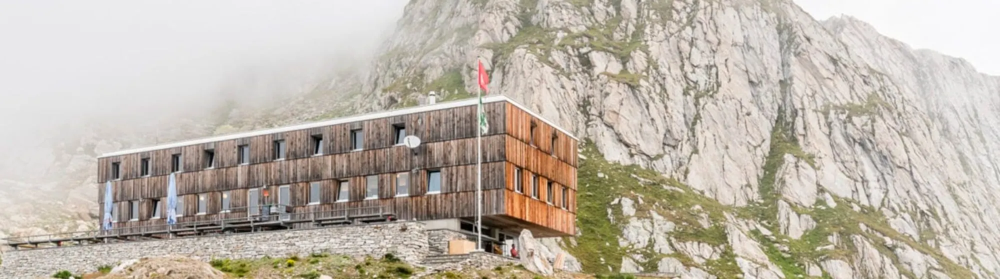
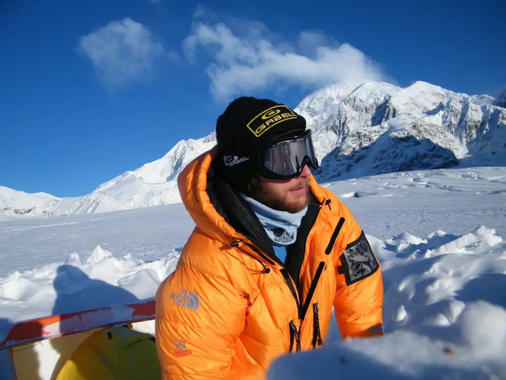
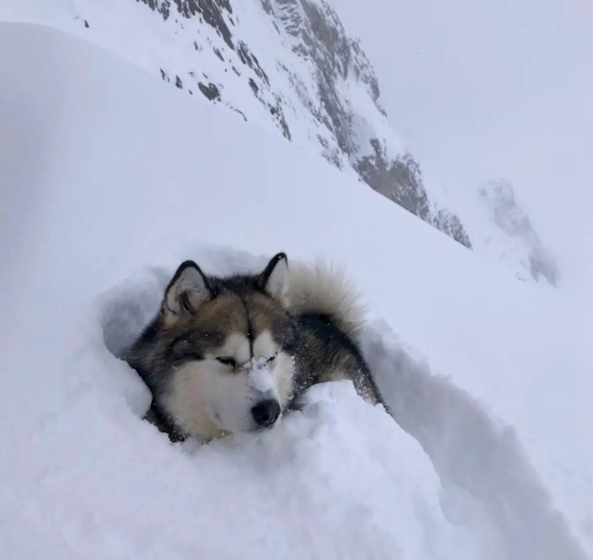
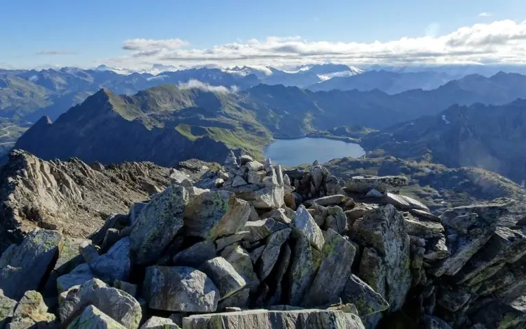
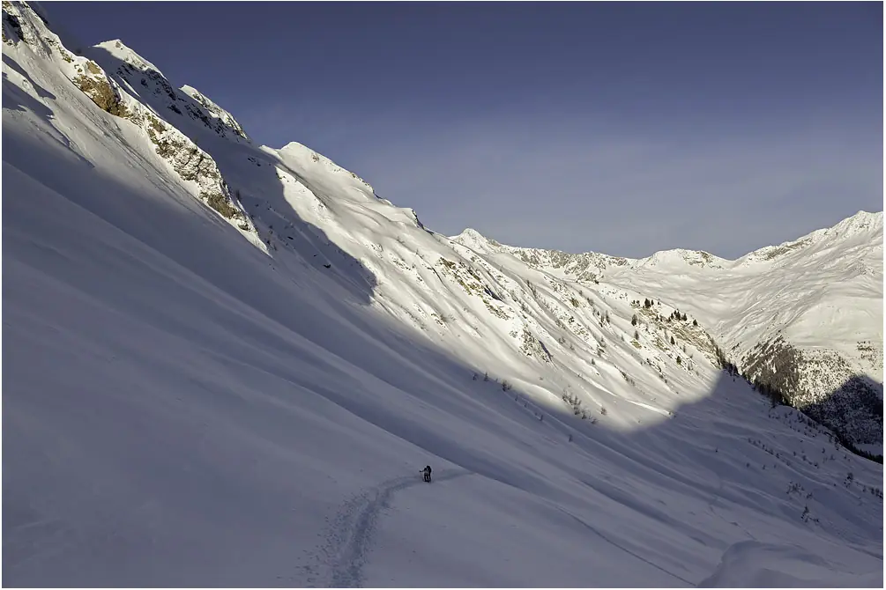
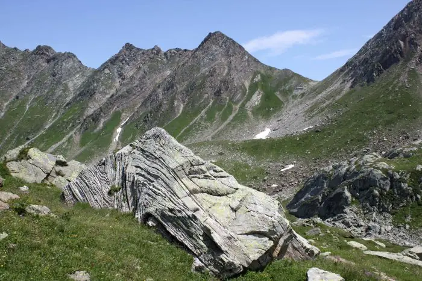

Cristallina
Passo Cristallina, Val Bedretto
- Altitude
- 2575 m
- Places
- 100
- Gardiennage
- de juin à mi-octobre ; en hiver les week-ends et jours fériés

Contactez le gardien avant de partir
Vérifiez toujours que le gardien est présent et renseignez-vous sur les conditions en montagne.
- Gardien
- Emanuele Vellati
- Téléphone
- +41 91 869 23 30
- cristallina@casticino.ch
La cabane
Conçue par les architectes Baserga et Mozzetti et inaugurée en 2003, c’est la première cabane moderne construite par le Club Alpin Suisse. Elle se dresse sur le col, à un point stratégique entre la Léventine et le Val Maggia : une étape panoramique sur les traversées vers Robiei, le Naret, le Campo Tencia et le San Giacomo. Le tour des lacs du Cristallina, en un ou deux jours, convient aussi aux familles ; en une heure on atteint le Cristallina et la Cima di Lago. En hiver, accessible surtout par le nord, elle ouvre sur de superbes pentes vers le Val Bedretto, Robiei et le Val Formazza.
La première cabane moderne du Club Alpin Suisse se dresse à 2575 m sur le Passo Cristallina, dans une région qui invite à l’exploration en été comme en hiver. En été, c’est une base pour les sommets alentour et pour les traversées vers le Val Maggia, le Val Formazza et la région du Gothard ; en hiver, les environs enneigés offrent de superbes descentes et des combinaisons de sommets.
Elle compte 100 places en couchettes avec duvets, dans 6 chambres de 4, 9 de 8 et 2 dortoirs de 12, une salle à manger panoramique avec terrasse, des toilettes intérieures avec eau chaude, une douche, un séchoir et un local à chaussures avec pantoufles de cabane. Le sac à viande est obligatoire. Bonne réception Swisscom à la cabane.
Séjour
- Ouverture
- Toujours ouverte et accessible
- Gardiennage
- De juin à mi-octobre ; en hiver, de décembre à fin avril, si les conditions sont bonnes, les week-ends, les jours fériés et pour les groupes
- Places
- 100
- Repas
- Préparés toute la journée par le gardien
- Boissons
- Disponibles aussi en l’absence du gardien
La cuisine
Pendant la journée, des plats simples pour tous : gnocchis, raviolis, tartes salées, charcuterie, desserts et bien plus, le tout préparé à la cabane avec des produits locaux suisses. Pour la demi-pension, les menus changent selon le jour de la semaine, en pensant aussi aux végétariens. Avec un bon choix de vins et d’eaux-de-vie.
Important : prévenez-nous à temps si vous êtes végétarien ou végan ou si vous avez des allergies ou des intolérances : nous préparerons volontiers un menu adapté.
Les chambres sont attribuées selon l’ordre d’arrivée des réservations et la taille du groupe ; elles ne peuvent pas être réservées en exclusivité. Quand la cabane est gardiennée, la demi-pension est obligatoire.
Les chiens sont les bienvenus, mais pas dans les chambres ni dans les salles communes : merci de nous prévenir avant votre arrivée.
Le gardien

Emanuele Vellati gère la cabane depuis l’hiver 2018. Électricien et cuisinier de formation, il la mène avec beaucoup de soin et de dévouement, comme le montrent les installations bien entretenues et l’excellente cuisine. Alpiniste passionné dans sa jeunesse, il vit aujourd’hui la montagne chaque jour, au cœur de son travail.
En été comme en hiver, de nombreux aides, amis et bénévoles du CAS Ticino l’épaulent, toujours heureux d’un petit remerciement. Et puis il y a Jack, l’habitant le plus paisible et le plus curieux de la cabane, qui aime la neige fraîche presque plus que nous.
Emanuele

Tarifs et réservation
RéserverMembres CAS/FAT et clubs avec droit de réciprocité
Nuitée avec demi-pension (souper et petit-déjeuner), TVA et taxe de séjour comprises
- Enfants jusqu’à 7 ans
- Fr. 30.–
- Enfants de 8 à 14 ans
- Fr. 50.–
- Jeunes de 15 à 21 ans
- Fr. 70.–
- Adultes dès 22 ans
- Fr. 83.–
- Guides de montagne
- Fr. 55.–
Non-membres
Nuitée avec demi-pension (souper et petit-déjeuner), TVA et taxe de séjour comprises
- Enfants jusqu’à 7 ans
- Fr. 30.–
- Enfants de 8 à 14 ans
- Fr. 55.–
- Jeunes de 15 à 21 ans
- Fr. 77.–
- Adultes dès 22 ans
- Fr. 95.–
Familles et groupes
Rabais en semaine pour les familles (dimanche-jeudi) et offre pour les groupes de jeunes : écoles, scouts, cours J+S (lundi-jeudi)
- Familles : réduction par enfant de moins de 15 ans
- Fr. 5.–
- Groupes : enfants jusqu’à 14 ans
- Fr. 40.–
- Groupes : jeunes de 15 à 18 ans
- Fr. 50.–
Suppléments
Pour des raisons d’hygiène, le sac à viande est obligatoire
- Pique-nique
- Fr. 12.–
- Thé en thermos pour la journée, avec le pique-nique
- inclus
- Douche (par personne)
- Fr. 5.–
- Sac à viande jetable
- Fr. 7.–
- Paiement uniquement en espèces en francs suisses, pas d’euros.
- Réservation en ligne avec le bouton « Réserver » : indiquez allergies, intolérances et végétariens dans la case prévue.
- Annulez la réservation au plus tard deux jours avant l’arrivée, au besoin aussi par téléphone ou e-mail ; le règlement sur la non-présentation (no-show) s’applique.
Accès
En été, la cabane est à quelques heures de marche, surtout par des sentiers adaptés aux familles ; en hiver à skis depuis le Val Bedretto, Robiei ou le Val Formazza.
- D’Ossasco : 3 h 30.
- Du Passo San Giacomo : 4 h.
- De Robiei : 3 h.
- Du lac du Narèt : 2 h 30.
- D’Airolo Pesciüm : 5 h.
- De la Capanna Poncione di Braga : 4 h.
- En hiver : d’Ossasco 3 h, d’All’Acqua 4 h.
En voiture depuis le nord : A2 jusqu’à Airolo, puis direction col du Nufenen et Val Bedretto. Depuis le sud : A2 jusqu’à Bellinzona, puis Locarno et le Val Maggia : Val Bavona pour Robiei, avec le téléphérique San Carlo-Robiei (en été), ou Val Lavizzara pour le Narèt.
En transports publics : train S10 jusqu’à Airolo, puis bus dans le Val Bedretto. Taxi depuis Airolo : Marchetti Taxi +41 91 873 30 35, Gotthard Taxi +41 78 790 10 55.
Traversées vers d’autres cabanes : Corno Gries (2338 m) 5 h ; Basodino (2200 m) 2 h ; Poncione di Braga (1870 m) 4 h ; Garzonera (2000 m) 5 h, T5 ; Rifugio Maria Luisa (Italie, 2393 m) 5 h.
Cartes : carte nationale 1:25 000 feuille 1251 Val Bedretto ; carte de ski de randonnée 265 S Nufenenpass.
Activités
Le Passo Cristallina est un lien naturel entre le massif du Gothard et le Val Maggia, au milieu d’un réseau d’itinéraires et de cabanes : la Via Idra, la Via Cristallina et la Via Alta della Vallemaggia passent toutes par ici. En hiver, c’est un paradis du ski de randonnée, avec un enneigement sûr même les années pauvres en neige.
La géologie raconte la formation des Alpes : du marbre issu de sédiments marins à côté de roches magmatiques, des plis incroyables. La faune est riche : la colonie de bouquetins vers la Cima di Lago, des chamois, des aigles, des faucons crécerelles. Et partout des traces du travail humain : alpages, installations militaires et grandes centrales hydroélectriques.

Propositions de courses
Cinq itinéraires de difficulté moyenne, de la Cima di Lago à la Via Idra, avec la cabane comme base ou comme étape.
En savoir plus
En hiver
Sommets et descentes en poudreuse : plusieurs descentes dans la journée autour de la cabane.
En savoir plus
Le saviez-vous ?
Occupation militaire, naissance des Alpes et grandes centrales hydroélectriques : quelques clés sur la région du Cristallina.
En savoir plusNouvelles de la cabane
Les dernières nouvelles de la cabane, publiées par l’équipe sur Facebook (surtout en italien).
Ouvrir la page FacebookLes publications ne sont chargées depuis Facebook qu’après le clic : dès ce moment, Facebook reçoit des données sur votre visite.
Soutenir la cabane
L’entretien, les rénovations et les travaux coûtent cher : les cabanes vivent aussi grâce aux membres et aux amis de la montagne. Vous pouvez les soutenir par un don sur le compte de la section, en indiquant le nom de la cabane.
- Compte
- Banca Stato, Lugano
IBAN CH09 0076 4128 9526 1200 6 - Communication
- Capanna Cristallina
Soutiens
Un grand merci aux partenaires qui soutiennent la cabane.